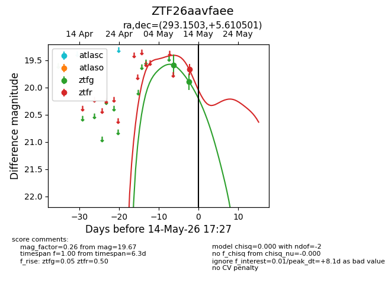
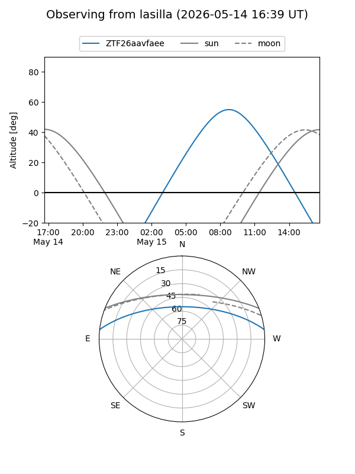
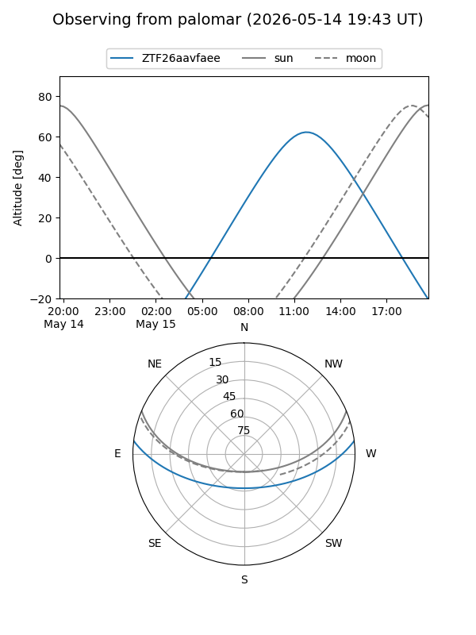
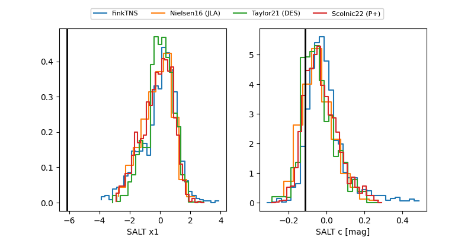

ZTF26aavfaee
Target ZTF26aavfaee at 2026-05-14 17:29
Aliases and brokers:
FINK: link
Lasair: link
ALeRCE: link
alt names
ZTF26aavfaee (ztf,fink_ztf)
Coordinates:
equatorial (ra, dec) = 293.1503,+5.61050
equatorial (HMS+DMS) = 19:32:36.08,+05:36:37.80
galactic (l, b) = (42.6718,-6.52581)
Flags:
Photometry:
last ztfg=19.89, ztfr=19.67
2 ztfg, 1 ztfr detections
Lightcurve

Visibility


Additional plots
